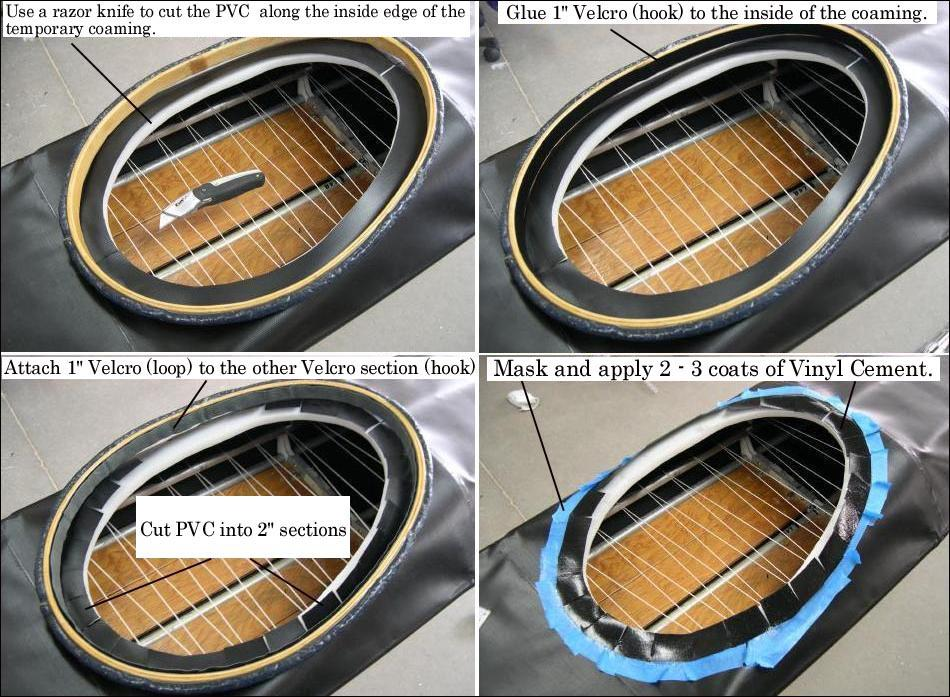

| Wood / Freestanding Coaming (5 of 7) | Menu Last Page Next Page |
|

Change from the pics above: Glue non-adhesive Velcro (hook) to the inside coaming using thickened epoxy resin or epoxy glue. As an quick alternative, 5-minute epoxy can be used.
Sew the The Velcro (loop) to a 1.25in strip of PVC before glueing to the 2" wide PVC panels. This is a change from the earlier method of gluing adhesive backed Velcro directly to the PVC panels. Gluing self-adhesive Velcro to the coaming ( wood or fiberglass) or to PVC has not shown long term durability. Pictures of the sewn Velcro/PVC will be added soon to provide more clarity to this process. |
|